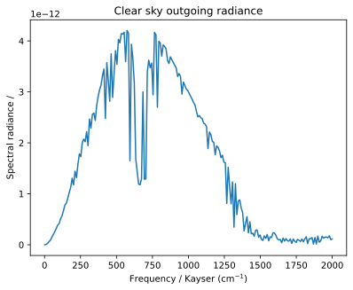

Simple outgoing radiance
# %%
"""
Calculate the clear sky upwelling longwave radiance at the top of the atmosphere. The atmosphere
is a standard tropical atmosphere, containing only water vapor, carbon dioxide and ozone
as trace gases. The water vapor absorption continuum is included.
"""
import pyarts3 as pa
import numpy as np
import matplotlib.pyplot as plt
# Download ARTS catalogs if they are not already present
pa.data.download()
# ARTS workspace
ws = pa.workspace.Workspace()
# Set up frequency grid
kayser_grid = np.linspace(1, 2000, 200) # in Kayser (cm^-1)
ws.frequency_grid = pa.arts.convert.kaycm2freq(kayser_grid) # in Hz
# Select absorption species and continuum model
# This example uses a reduced set of species to speed up the calculation.
# Use the second line for a more realistic setup.
ws.absorption_speciesSet(
species=["H2O-161, H2O-ForeignContCKDMT400, H2O-SelfContCKDMT400", "CO2-626"]
)
# ws.absorption_speciesSet(
# species=["H2O, H2O-ForeignContCKDMT400, H2O-SelfContCKDMT400", "CO2", "O3"]
# )
# Read spectral line data from ARTS catalog
ws.ReadCatalogData()
# Apply a frequency cutoff. To be consistent with the CKD water vapor continuum,
# a cutoff of 25 Kayser is necessary. We set it here for all species, because it
# also speeds up the calculation.
cutoff = pa.arts.convert.kaycm2freq(25)
for band in ws.absorption_bands:
ws.absorption_bands[band].cutoff = "ByLine"
ws.absorption_bands[band].cutoff_value = cutoff
# Remove 90% of the lines to speed up the calculation
ws.absorption_bands.keep_hitran_s(approximate_percentile=90)
# Automatically set up the methods to compute absorption coefficients
ws.propagation_matrix_agendaAuto()
# Set up a simple atmosphere
ws.surface_fieldPlanet(option="Earth")
ws.surface_field[pa.arts.SurfaceKey("t")] = 295.0
ws.atmospheric_fieldRead(
toa=100e3, basename="planets/Earth/afgl/tropical/", missing_is_zero=1
)
# Set up geometry of observation
pos = [100e3, 0, 0]
los = [180.0, 0.0]
ws.ray_pathGeometric(pos=pos, los=los, max_step=1000.0)
ws.spectral_radianceClearskyEmission()
# %% Show results
fig, ax = plt.subplots()
ax.plot(kayser_grid, ws.spectral_radiance[:, 0])
ax.set_xlabel("Frequency / Kayser (cm$^{-1}$)")
ax.set_ylabel("Spectral radiance /")
ax.set_title("Clear sky outgoing radiance")
(Source code, svg, pdf)
{kind=link}
